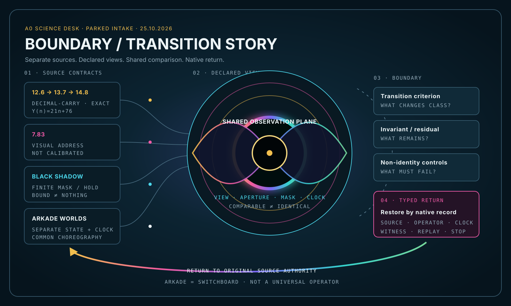
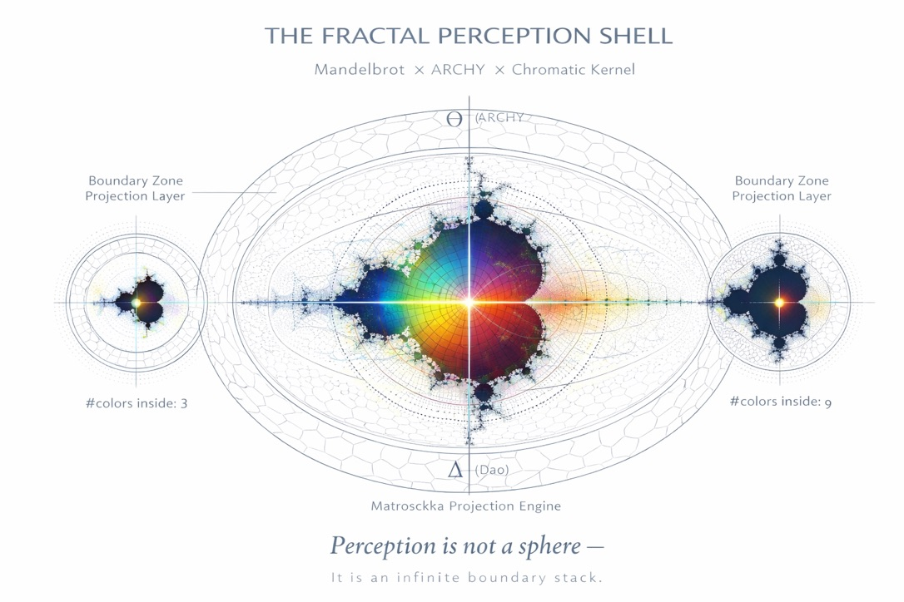
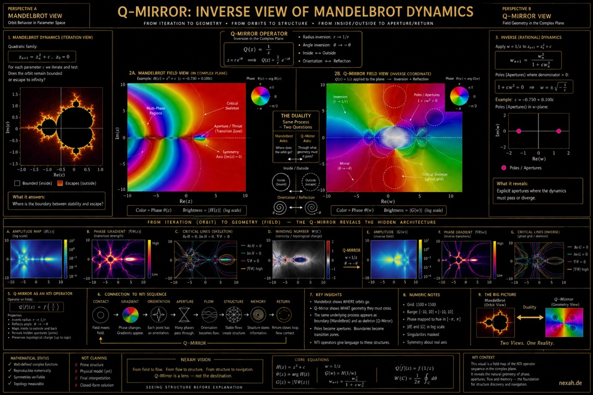
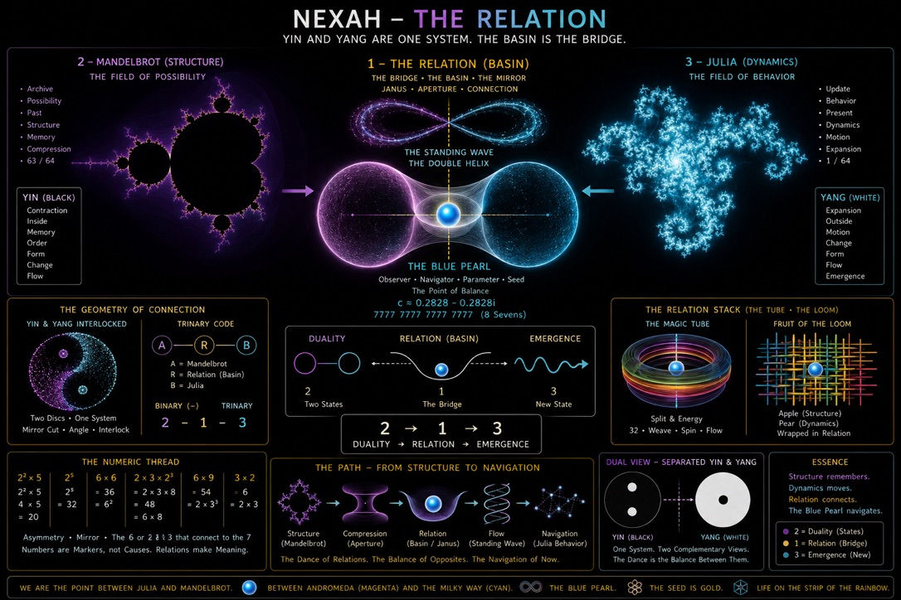
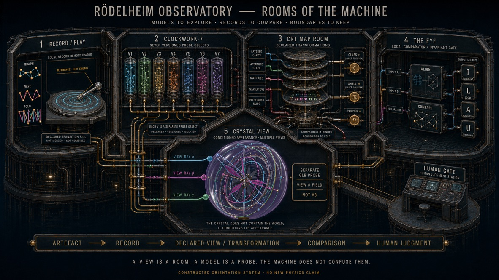

01 · QUELLEN
Getrennt beginnen.
12.6→13.7, 7.83, Mandelbrot-Maske und Arkade-Welten behalten jeweils ihren eigenen Typ, ihre Bedeutung und ihren Prüfvertrag.
Eine gemeinsame Bühne kann unterschiedliche Systeme vergleichbar machen, ohne ihre Quellen, Operatoren oder Rückwege zusammenzuziehen.

Die starke gemeinsame Struktur ist kein heimlicher Einheitsoperator. Sie liegt darin, dass getrennte Quellen auf einer deklarierten Beobachtungsfläche gemeinsam gelesen werden können — und danach zu ihrem eigenen Record zurückkehren.
12.6→13.7, 7.83, Mandelbrot-Maske und Arkade-Welten behalten jeweils ihren eigenen Typ, ihre Bedeutung und ihren Prüfvertrag.
Farbe, Apertur, Takt oder Projektion können eine gemeinsame Vergleichsfläche bilden. Vergleichbarkeit ist keine Identität.
Ein Grenzkriterium benennt exakt, wann eine beobachtete Klassifikation kippt. Das endliche Bild bleibt eine Stichprobe.
Der schwarze Bereich kann eine Maskierung oder einen gebundenen Zustand anzeigen. Nur der Quellrecord entscheidet, welche Information erhalten blieb.
Die Arkade choreografiert getrennte Welten. Gemeinsamer Takt und gemeinsame Bedienung machen Unterschiede erfahrbar, nicht unsichtbar.
Ein Vergleich schließt erst mit Source, Operator, Parametern, Residuum und dem für diese Quelle gültigen Rückweg.




Die Werte und Formen „halten ein Level“, wenn sie auf derselben Anzeige-, Takt- oder Vergleichsebene erscheinen. Das begründet noch keine numerische Gleichheit und keine gemeinsame Physik. Die gemeinsame Ebene ist ein Instrument der Orientierung.
Besonders interessant sind Übergangszonen: Dort genügt eine kleine Änderung an Parameter, Apertur oder Iteration, um die sichtbare Klasse zu wechseln. Genau daraus entsteht die Frage, wo eine Form möglich ist und welcher Witness den Wechsel trägt.